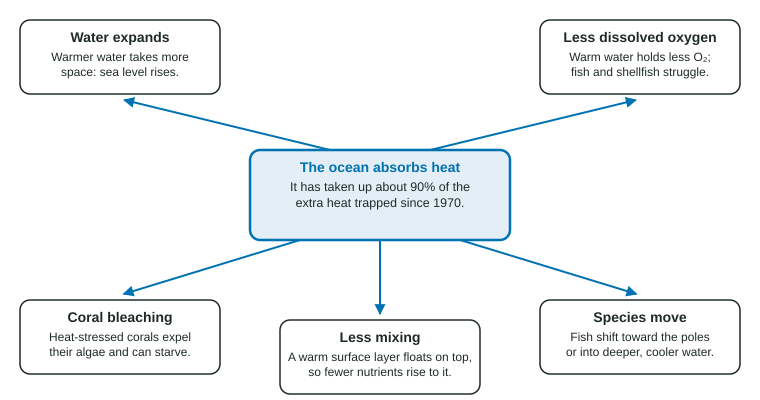

When people talk about global warming, they usually mean air temperature. But most of the extra heat trapped by greenhouse gases does not stay in the air. It goes into the ocean. This page explains why, and what warmer water does to sea level, oxygen, coral reefs, fish and ocean currents.
The ocean takes most of the heat
Water can store far more heat than air. It takes about four times as much energy to warm a kilogram of water by 1 °C as a kilogram of air, and the ocean has vastly more mass than the atmosphere. So the ocean has absorbed about 90% of the extra heat trapped since 1970. That has slowed the warming of the air, but it changes the ocean itself.

Thermal expansion and sea level
When water warms, its molecules move faster and spread apart, so the same mass takes up more space. This is thermal expansion. Across a whole ocean, even a small expansion raises sea level. Together with water from melting land ice, it causes most of today's sea level rise.
Two traps to avoid: melting sea ice does not raise sea level, and thermal expansion is caused by heat, not by carbon dioxide dissolving in the water.
Less oxygen
Gases dissolve less in warm water, like a soda that goes flat faster when it is warm. So warmer seawater holds less oxygen, at the same time as fish and other animals need more because their bodies run faster in the heat.
| Seawater temperature | 0 °C | 10 °C | 20 °C | 30 °C |
|---|---|---|---|---|
| Most oxygen it can hold | about 11 mg/L | about 9 mg/L | about 7.4 mg/L | about 6 mg/L |
Worked example. Seawater warms from 10 °C to 20 °C. Using the table, by what percent does the oxygen it can hold change?
Setup:
Answer: , a drop of about 18%. Fish that need more than 7.4 mg/L can no longer live in that water when it is fully warmed.
Warming also makes the ocean more layered. A warm, light surface layer floats on cold, dense water and mixes with it less. Less mixing means less oxygen carried down and fewer nutrients brought up to the phytoplankton at the surface, the base of most ocean food webs.
Coral bleaching
Reef-building corals live with tiny algae inside their tissues. The algae make food by photosynthesis and give corals their color. When water stays too warm for too long, stressed corals expel the algae and turn white: coral bleaching. A bleached coral is not dead, but it is starving; if the heat lasts, it dies. Repeated heat waves have bleached large parts of the Great Barrier Reef since 2016.
Species on the move
Many fish and other ocean animals move toward the poles or into deeper, cooler water to stay within their range of tolerance. Fisheries change as a result: species a town has fished for generations may move away, and new ones arrive.
Ocean currents
The thermohaline circulation, or ocean conveyor belt, is a slow loop of deep currents that moves heat around the planet. It is driven by density: in the North Atlantic, cold and salty water is dense and sinks, pulling surface water in behind it. "Thermo" means heat and "haline" means salt. Warming and fresh meltwater from Greenland both make North Atlantic surface water less dense, so it sinks less readily. Scientists are watching for signs that the circulation is slowing, which could change climate around the Atlantic.
Rates from data
If a sea's surface warmed by 0.9 °C over 60 years, the rate is